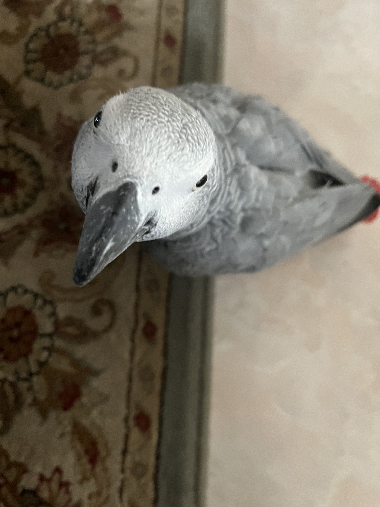
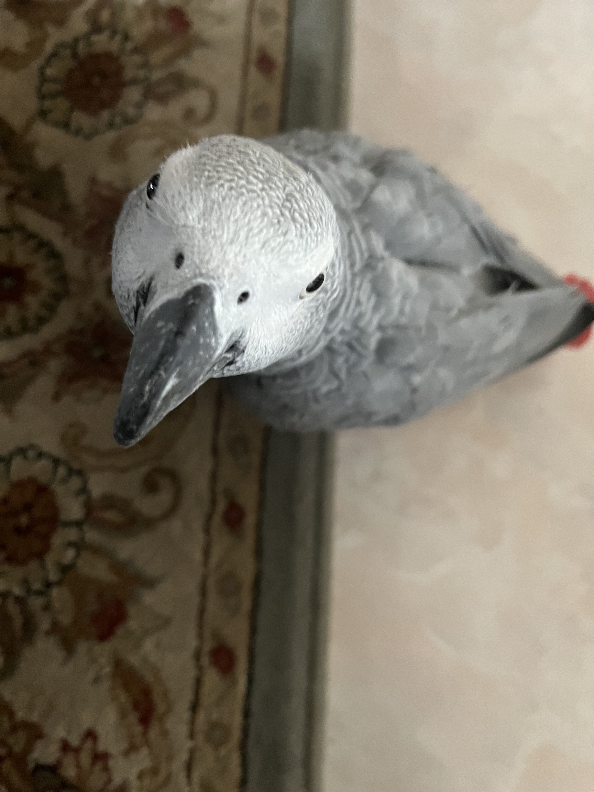

Cooper

Cooper is an 8yr old border collie and lab mix. We rescued him from the Humane Society as a puppy! He loves going on long walks/runs, but he stops to sniff something every few steps. He’s pretty friendly, but he loves to loudly bark at delivery people who ring the doorbell.
Whenever it’s movie night, Cooper has to join on the couch/bed or he feels left out. He loves to cuddle and pats on his tummy. Cooper will play fetch for about 2 or 3 rounds, but he quickly gets bored. He leaves his toys all around the house for the rest of the family to find.
Photo Gallery


Likes
- Peanut butter
- Going on long walks
- Sleeping
Mocha

Mocha is a 5-year-old quarter Maltese, quarter Yorkshire Terrier, and half mutt. He was not adopted but actually born into the family and lives with his mommy Mochi and a loving family. Mocha likes to fool people into thinking that he's a dummy boy then making an intelligent comeback to surprise everyone of his big brain. He recently got a new toy that squeaks so high that he gets so excited everytime he chews on it.
If Mocha likes something or someone, he likes to rub his neck on it. This includes (but not limited to) rubber toys, favorite snacks, blankets, and human faces. As soon as someone lays down facing up, Mocha will run out from somewhere in the house and launch himself onto your face. It seems to be his favorite activity.
Photo Gallery


Likes
- Rubber toys
- Walks
- Anything edible
Zack

African grey parrot, 3 years old, red tail, and standing on kitchen tile. Zack is an African grey parrot, aged around three years old. Zack loves flying and being outside of the cage at all times. He’s very nice but bites so much.
Zack’s favorite foods are unsalted sunflower seeds and mangos. He loves being able to sit on people’s shoulder and talking to them. Zack knows over 500 words and learns more everyday.
Photo Gallery

 


Likes
- Sunflower seeds
- Flying
- Going on walls
Jingle

Jingle is a domestic shorthair cat with a white chest and belly and a striped black and gray back. His paws are white and they look like mittens.
Jingle loves going outside. He used to be an outdoor/indoor cat until we realized that he loved to get injured. Now, we take him on walks with a leash which he loves! Every time he sees me carrying the leash he goes crazy and meows to go out. Jingle is very mischievous, he has gotten into many different accidents. His first accident was outside; a bee stung his paw and he cried all night long. The second one was ALSO outside, he got stuck on a tree for four days. Finally, he came back home one day with his tail bleeding and ripped out.
Photo Gallery


Likes
- Going on walks
- Being pet
- Eating treats
Bo

Bo is a Portuguese Water Dog with black and white fur. His paws are white too, so they always get dirty when outside. He is 12 years old, but he still likes to run around outside a lot.
He has an abundance of toys but only likes to play with a couple. He enjoys going on walks and especially on trails in the woods. He has a few dog friends that he likes to go on playdates with as well.
Photo Gallery


Likes
- The Sun
- Treats
- Dogs